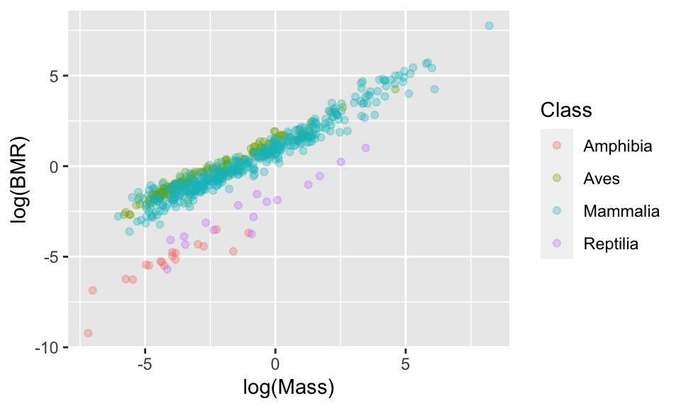
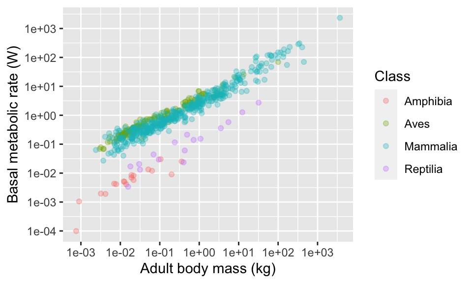
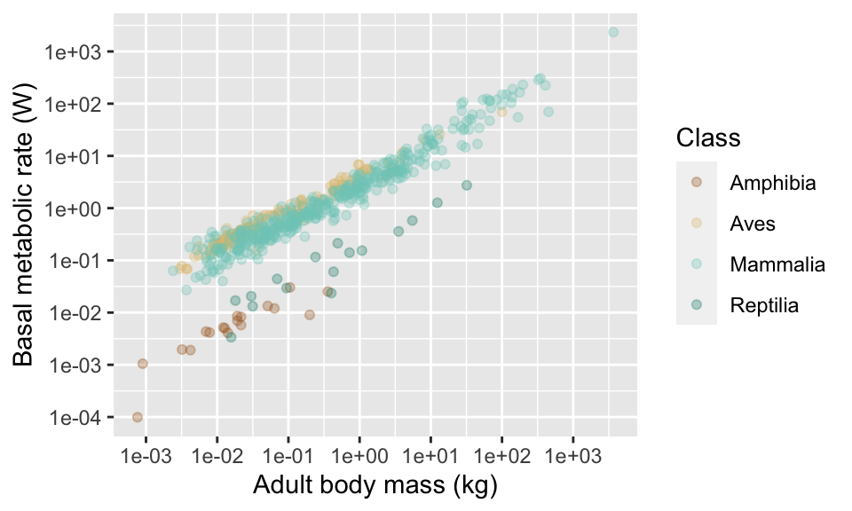
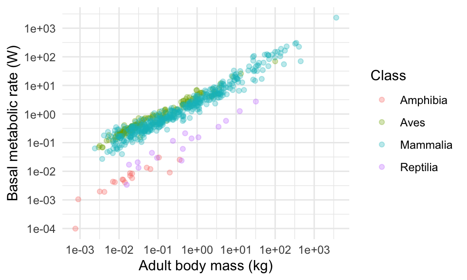

Chapter 9 Pimping your plots
In this chapter you will learn, by following examples, how to customise plots made with ggplot to improve “readability”, or just for aesthetic reasons.
We will cover the following:
- Modifying axes (log transform, different tick marks/ranges etc.).
- Colour schemes.
- Themes - built-in sets of styles.
- Multiple sub-plots in a plot.
- Saving your plots.
For these examples I will use the dataset on animal life history, Anage.
x <- read.csv("CourseData/anage_data.csv")You can remind yourself what this data looks like using commands like summary, str and names.
I will process the data a bit to make it easier to work with. One of the commands might be new to you - rename. This is simply a way of renaming columns, in this case to make them more “user friendly” (e.g. I want to rename the column “Metabolic.rate..W.” to “BMR” (for basal metabolic rate)).
I will also use mutate to (1) convert the Mass from grams to kilograms and (2) to make a new variable called “BMRperKg” which standardises metabolic rate by expressing it as rate per kilogram.
anage <- x %>%
mutate(Species = paste(Genus,Species)) %>%
rename(Longevity = "Maximum.longevity..yrs.",
Mass = "Body.mass..g." ,
BMR = "Metabolic.rate..W.") %>%
select(Class, Order, Species,Mass,Longevity,BMR) %>%
filter(Class %in% c("Aves","Amphibia","Mammalia","Reptilia")) %>%
droplevels() %>% #this removes unused "factor levels" e.g. "Insecta"
mutate(Mass = Mass/1000,
BMRperKg = BMR/Mass)
summary(anage) ## Class Order
## Length:3231 Length:3231
## Class :character Class :character
## Mode :character Mode :character
##
##
##
##
## Species Mass
## Length:3231 Min. : 0.001
## Class :character 1st Qu.: 0.026
## Mode :character Median : 0.131
## Mean : 13.188
## 3rd Qu.: 1.111
## Max. :3672.000
## NA's :2604
## Longevity BMR
## Min. : 0.40 Min. : 0.0001
## 1st Qu.: 10.20 1st Qu.: 0.2655
## Median : 16.20 Median : 0.7050
## Mean : 19.37 Mean : 11.8309
## 3rd Qu.: 24.45 3rd Qu.: 3.1370
## Max. :211.00 Max. :2336.5000
## NA's :432 NA's :2604
## BMRperKg
## Min. : 0.0454
## 1st Qu.: 2.2191
## Median : 4.5745
## Mean : 7.0439
## 3rd Qu.: 9.8686
## Max. :45.7692
## NA's :2604
9.1 A basic plot
Now lets start with a basic plot. You will see a warning about removing rows with missing values. This is just a warning to let you know that there are missing (NA) values in the data you are plotting.
(p1 <- ggplot(anage,aes(x = Mass, y = BMR, colour = Class)) +
geom_point(alpha=0.3)) #use alpha argument to make points transparent
9.2 Axis limits
These points are really spread out. One option to deal with this might be to set the range over which the axes are allowed to go using xlim and ylim.
p1 +
xlim(0,500) +
ylim(0,300)
9.3 Transforming the axis (log scale)
In this particular case though use of a log scale would be best because even after focusing on a smaller part of the range of values you can see that the points are still concentrated at smaller values. In a moment, you will also see that log-transforming the data makes the cloud of points pleasingly linear.
You can set a log scale by using the commands scale_x_continuous(trans = "log") and scale_y_continuous(trans = "log").
(p2 <- p1 +
scale_x_continuous(trans = "log") +
scale_y_continuous(trans = "log"))

9.4 Changing the axis tick marks
This looks nice. But the numbers on the axis are not very nice. Using summary(anage$BMR) tells us that the range of data is from 0.0001 to 2336.5. We could place tick marks anywhere on this axis, but let’s try 0.0001, 0.001,0.1, 1,10, 100, 1000.
(p2 <- p1 +
scale_x_continuous(trans = "log") +
scale_y_continuous(trans = "log", breaks = c(0.0001,0.001,0.01,0.1,1,10,100,1000)))
Using summary(anage$Mass) tells us that the range of data is from 0.001 to 3672. We could place tick marks anywhere on this axis, but let’s try 0.001,0.1, 1,10, 100, 1000.
(p2 <- p1 +
scale_x_continuous(trans = "log",
breaks = c(0.001,0.01,0.1,1,10,100,1000)) +
scale_y_continuous(trans = "log",
breaks = c(0.0001,0.001,0.01,0.1,1,10,100,1000))
)
9.5 Axis labels
Now, let’s think about the axis labels. The labels in the plots so far have no units indicated, and might not be easy to interpret for the reader. Let’s add units, and also spell out more fully what “BMR” and “Mass” means (the axes is basal metabolic rate in Watts and adult body mass in kg).
(p3 <- p2 +
xlab("Adult body mass (kg)") +
ylab("Basal metabolic rate (W)")
)
9.6 Colours
What about those colours? The ggplot package uses some default colours that are OK, but sometimes you will want to make a change.
You can “manually” adjust colours using the scale_colour_manual function. You can either name individual colours (e.g. “red”,“green”,“orange”,“black”)6, or you can find their so-called “hex-codes” from a site like http://colorbrewer2.org/ or https://htmlcolorcodes.com/color-picker/. You can add a two digit number after the hex code to set the “opaqueness” of the colour. For example “#FF000075” is red, with 75% opacity.
With colour names…
p3 +
scale_colour_manual(values = c("red","green","orange","black"))
And with some hex codes…
p3 +
scale_colour_manual(values = c("#33FF6475","#3368FF75","#FF33CE75","#FFCA3375"))
Another alternative is to use some of ggplot’s built in “palettes” of colour combinations. For example, there are several palettes called “viridis”.
p3 +
scale_colour_viridis_d(option = "D")
Try using other option arguments A, B, C and E. Try also adding an argument for transparency alpha = 0.5.
Here’s a couple more palettes. There’s one for shades of grey…
p3 +
scale_colour_grey()There’s another one for various colour schemes, called “colour brewer”. Try using “RdGy”, “RdYlBu” and “Spectral” see ?scale_colour_brewer for more options.
p3 +
scale_colour_brewer(palette = "BrBG")9.7 Themes
Finally, ggplot includes the option to set a theme for the plots. “Themes”" make adjustments to the “look” of the plot. It is possible to write your own themes, but I recommend to use some ready-made ones. You can implement them by adding them as you would any other addition to the ggplot command (e.g. + theme_light().
There are several themes included with ggplot. Try my favourite, theme_minimal(). Then try theme_classic() and theme_dark().
(p4 <- p3 +
theme_minimal()
)
For more theme fun, you can install packages that include more themes. The best one is called ggthemes (remember that you only need to install the package once). Try theme_economist(), theme_tufte() and (ugh!) theme_excel(). You can see what other themes there in this package at https://jrnold.github.io/ggthemes/reference/index.html (some of them are really ugly in my opinion!).
install.packages("ggthemes")library(ggthemes)
p3 +
theme_economist()
This package also includes some useful colour scales, including some for colour blind people.
p3 +
scale_color_colorblind()
9.8 Moving the legend
By default, the legend is placed on the right. You can move it around by adding a theme argument to your plot commands. It can also be placed on the “top”, “bottom”, or “left”. You can also remove the legend altogether by using legend.position = "none". You might also want to remove the legend title using the theme argument legend.title = element_blank().
p3 +
theme(legend.position = "bottom")
9.9 Combining multiple plots
It is often useful to combine two or more plots into a single figure. For example, many journals have strict limits on the number of plots so it is useful to combine plots into “Figure 1A and B” etc.
There are several R packages that can do this and my favourite is called patchwork.
install.packages("patchwork") #only need to do this oncelibrary(patchwork)I will illustrate it by first making another plot, this time showing the relationship between body mass and standardised BMR (BMR per kg). Because I am combining the plots into a smaller space I have decided to remove the figure legend (I could put it in the figure caption instead).
#PlotA (this is what you have already created above)
plotA <- ggplot(anage,aes(x = Mass, y = BMR, colour = Class)) +
geom_point(alpha=0.5) +
scale_x_continuous(trans = "log",breaks =c(0.001,0.01,0.1,1,10,100,1000)) +
scale_y_continuous(trans = "log",breaks =c(0.0001,0.001,0.01,0.1,1,10,100,1000)) +
xlab("Adult body mass (kg)") +
ylab("Basal metabolic rate (W)") +
theme_minimal() +
theme(legend.position = "bottom",
legend.title = element_blank())
(plotB <- ggplot(anage,aes(x = Mass, y = BMRperKg, colour = Class)) +
geom_point(alpha=0.5) +
scale_x_continuous(trans = "log",breaks =c(0.001,0.01,0.1,1,10,100,1000)) +
scale_y_continuous(trans = "log",breaks =c(0.0001,0.001,0.01,0.1,1,10)) +
xlab("Adult body mass (kg)") +
ylab("Basal metabolic rate (W/kg)") +
theme_minimal() +
theme(legend.position = "none")
) #This one is wrapped in brackets so that R shows it
Now I can combine these using the very simple syntax like this:
plotA + plotBI can add titles using the ggtitle command like this.
plotA + ggtitle("A") + plotB + ggtitle("B")
You could place the sub-plots on top of each other like this.
(plotA + ggtitle("A")) / (plotB + ggtitle("B"))
9.10 Saving your plot
You should, I think, already know about using the “Export” button in RStudio to save out your plot. This is useful and easy, but you should know that you can also save the plots using a typed command (ggsave) in your script. This command is handy because it allows you to automatically set the size, and file name of your plot.
The default setting for ggsave is that it will save the last plot that was printed to your computer screen to a file name that you specify. Therefore easiest way to use the command is to simply place the ggsave command immediately after your ggplot command. You should set the width and height of the plot and the units (the default is inches). It usually takes a few attempts and a bit of trial-and-error to choose the dimensions so that the plot looks nice.
ggsave("MySavedPlot1.png", width = 18, height=10, units = "cm")The command can save to various file types including png, jpeg, pdf (see the ggplot help file for more). R knows what file file type is chosen by checking the file extension in the file name (e.g. .png). I advise to use png.
9.11 Final word on plots
We have covered a lot of ground here. There is a lot to learn, but don’t feel like you have to remember all of these commands (I don’t). Mostly it is simply a case of remembering that it is possible to do these things, and knowing where to look up the commands. Obvious starting points are this course book, and the text book (including the online version!). You can also usually find help by Googling “ggplot” followed by what you are trying to do (e.g. “ggplot change axis ticks”). One of my frequently used web sites is this one http://www.sthda.com/english/ which has an extensive section on ggplot (http://www.sthda.com/english/wiki/ggplot2-essentials).
Even though we have covered a lot of ground we have still only gotten a taster of what ggplot is capable of. I encourage you to learn more. A useful resource for learning is the online R graph gallery" at https://www.r-graph-gallery.com/, which shows you how to make and modify many types of plot.